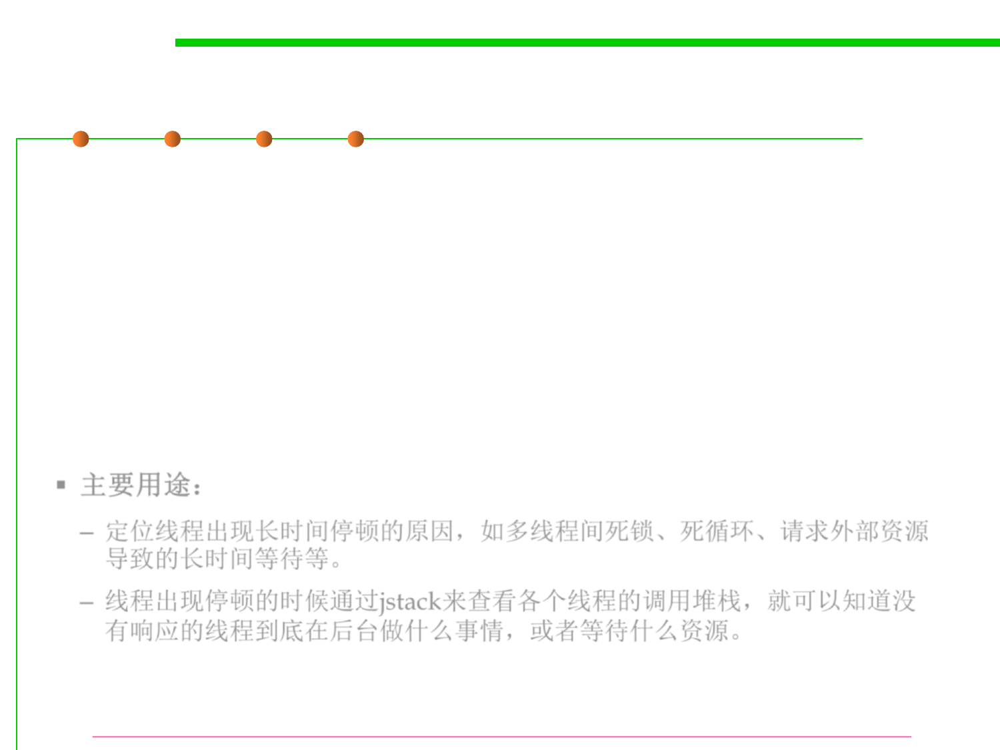

jstack
8.2 Dynamic Program Analysis Methods and Tools
▪ jstack prints the stack traces of Java threads for a given Java
process or core file or a remote debug server.
– For each Java frame, the full class name, method name, 'bci' (byte code
index) and line number, if available, are printed.
– With the -m option, jstack prints both Java and native frames of all
threads along with the 'pc' (program counter).
– For each native frame, the closest native symbol to 'pc', if available, is
printed.
▪ 主要用途：
– 定位线程出现长时间停顿的原因，如多线程间死锁、死循环、请求外部资源
导致的长时间等待等。
– 线程出现停顿的时候通过jstack来查看各个线程的调用堆栈，就可以知道没
有响应的线程到底在后台做什么事情，或者等待什么资源。
https://docs.oracle.com/javase/8/docs/technotes/tools/windows/jstack.html